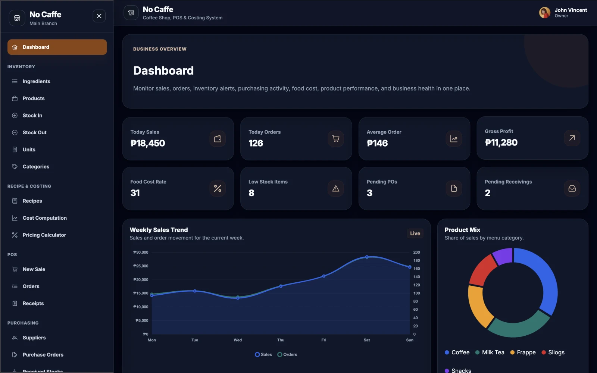

Case study 04 / 05 — Café operations
POS for caffe
A point-of-sale system for small café owners who want to see what they can sell from today’s stock, how much each drink costs and where ingredients may be going missing.
- Audience
- Small café owners
- Platform
- Web app
- Stack
- Vue, Pinia, PrimeVue

At a glance
- Problem
- A till shows what customers paid. The owner also needs to know what the remaining ingredients can make and why some ingredients run out early.
- Solution
- Connect each menu item and size to an ingredient recipe. Use the same portions to estimate servings, calculate food cost and record stock used at checkout.
- Outcome
- The owner can check which ingredient limits sales, review the margin on a drink and compare the expected stock balance with a physical count.
01 — Context
Why did the milk run out before closing?
A busy shift can end with a full cash drawer and an empty milk fridge. Sales receipts tell the owner how many lattes sold. To work out whether the milk should have lasted longer, the owner also needs the delivery quantity and the milk portion for each cup size.
02 — Requirements
Three decisions during a shift
Before opening, the owner needs to know which drinks are available. At the counter, the cashier needs to ring up a size and quantity. At closing, the owner needs a record of the ingredients those orders should have consumed.
03 — System design
The ingredient that runs out first sets the limit
Take a latte that uses 18 g of coffee and 200 ml of milk. With 360 g of beans and 3 litres of milk, there is coffee for 20 lattes but milk for only 15. At ₱120 each, that stock could bring in ₱1,800 if all 15 sell as lattes. Other drinks draw from the same milk supply, so their potential sales cannot simply be added on top.
04 — Features
From a recipe to a receipt
Recipes specify ingredients by serving size. Cost Computation prices those portions using purchase costs. New Sale checks the ingredients needed across the whole order, and stock movements give the owner a record to review after checkout.
05 — Build
One recipe for costing and checkout
The Vue app converts recipe portions into the units used in inventory, so a bottle bought by the litre can be used in millilitres at the counter. The browser demo uses Pinia and local storage to keep records between visits on the same device.
06 — Results
Tracing a shortfall after closing
Suppose the café starts with 3 litres of milk and sells ten lattes at 200 ml each. The expected balance is 1 litre. If the closing count is 700 ml, the owner has a specific 300 ml gap to investigate. Checking recorded waste, actual pours and any missed sales helps narrow down the cause.
07 — Reflection
A recipe is only as accurate as the pour
A generous pour can quietly reduce the margin on every cup. Measuring a typical serving and keeping ingredient prices current makes the costing useful. A regular physical count gives the owner a way to check those assumptions against what is actually on the shelf.